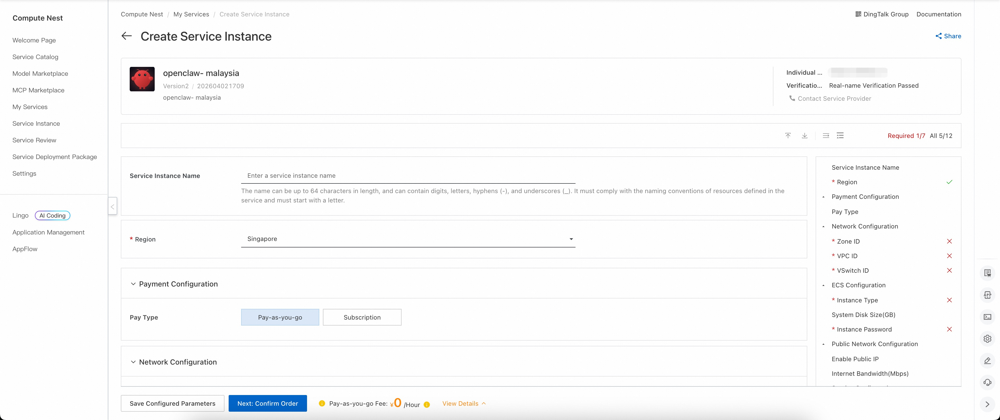
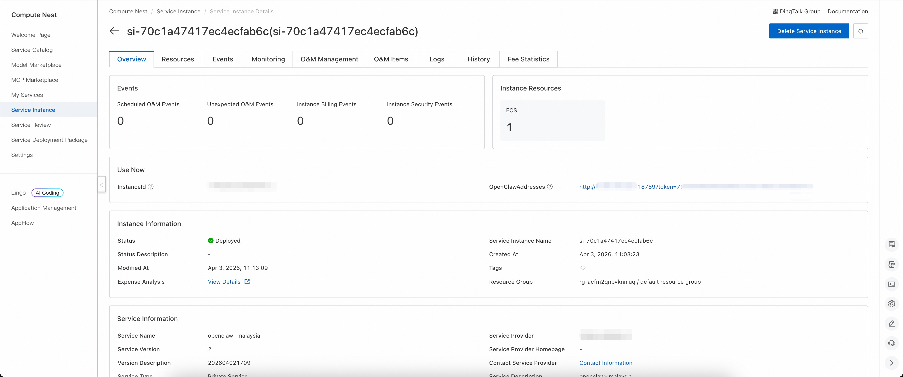
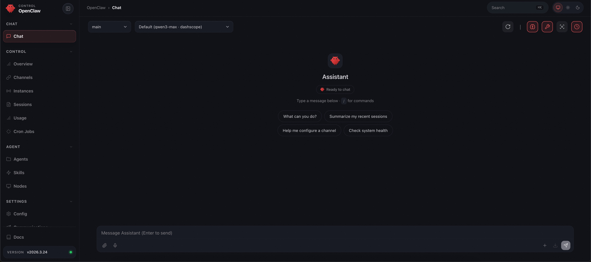

Openclaw-Malaysia Introduction
Openclaw-Malaysia is a modern robotic process automation (RPA) platform specifically designed for the Malaysian market. Openclaw-Malaysia helps users automate repetitive desktop tasks and increase productivity, with deep localization tailored to Malaysia's unique business environment. Openclaw-Malaysia has an intuitive user interface and powerful automation functions to support a variety of application scenarios. With Openclaw-Malaysia, you can easily create, manage, and execute automated tasks without programming experience. It also provides rich integration interfaces that work seamlessly with other systems and services.
Deployment process
- Visit the Openclaw-Malaysia of the computing nest deployment link and fill in the deployment parameters according to the page prompt:

- After completing the parameters, you can see the corresponding RFQ details. After confirming the parameters, click Next: Confirm Order.
- Confirm that the order is complete and agree to the service agreement and click Create Now to enter the deployment phase.
- Wait for the deployment to complete and enter the service instance details page.

- Click on the service address and use the Openclaw-Malaysia community version.

© 2009-2022 Aliyun.com 版权所有